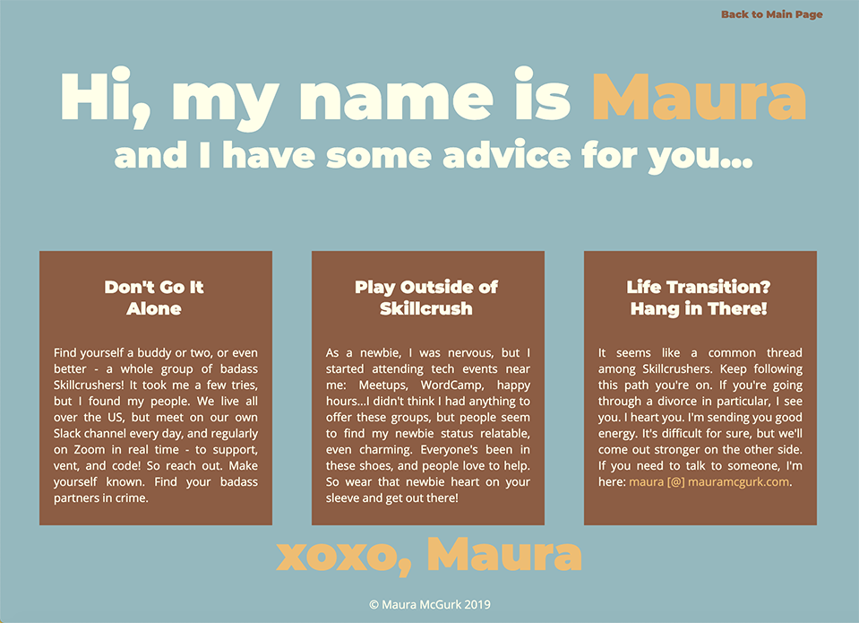

Advice for Newbies
Case Study
The Challenge
This was an open-ended class exercise, using HTML and CSS. The objective was to create a homepage for newer students who were just beginning a coding program to become web designers, and to offer the new students some advice.
I decided on taking a supportive tack in my advice page. I knew my words were important to those who might read them (because I'd been moved by reading others' advice to me), but I also wanted colors and fonts that would visually reinforce the same message of support.
I am a big believer in the power of color. Color, both alone or in combination with other color, actually has physiological effects on our bodies. Color can force your eyes to involuntarily move; it can increase or decrease your blood pressure; it can quite literally put you at ease or cause you to want to move.
The Solution
Visually speaking, I used a complementary color scheme of blue and orange. Because our eyes cannot focus on complementary colors at the same time, our eyes sort of “bounce” between the two colors, focusing on one at a time. Though this is nearly imperceptible most of the time, there is still a real, physiological action that takes place when we perceive these colors close to each other, and it’s why they evoke a sense of excitement when they’re used together. Brown is a desaturated version of red/orange and can be considered a complement of a desaturated blue, as here. The complementary color scheme was intended to suggest a sense of action, and by extension, movement and progress, to new developers.
Rather than going for an edgy sort of action, with highly saturated colors, my gentle, supportive message required something more comfortable and encouraging, so I chose to desaturate the complements of blue and orange.
I chose a soft, friendly sans-serif font to deliver my message of support and encouragement. Visually speaking, I hope my advice is less like a spoonful of medicine, and more like a warm sweater on a fall day.